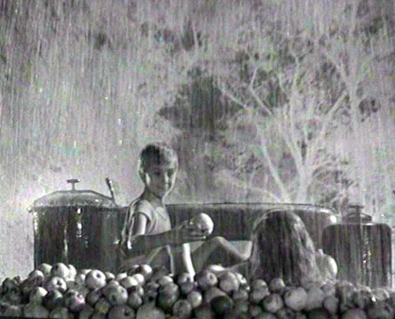

Si no te comportas como un niño durante tu infancia es porque alguien te lo impide.
...Un niño corre entre los árboles. El sol y las hojas, puede que sea verano. La voz de su madre le llama. Despierta. De nuevo la cama, sucia. El frío y el hambre…
La infancia es mucho imitar. Si un niño está rodeado de soldados, el niño quiere ser un soldado, si está rodeado de guerra, quiere ser guerra.
...Un camino de tierra. Desde el suelo se ven las copas de los árboles. Una camioneta lo cruza. Un niño y una niña juegan dentro del remolque, que está lleno de manzanas. Estiran los dedos, hacia el cielo, casi pueden rozarlo...
Puede que haya algo en la inocencia que nunca se pierde. Los adultos intentamos emular esa inocencia haciendo el idiota de una forma simpática. Así nos sentimos niños otra vez.
...Las ramas de los árboles cambian sus colores por el blanco y negro de un negativo de fotografía. Empieza a llover. Iván sonríe, coge una manzana empapada. Se la ofrece, y ella la rechaza...
El único lugar en el que Iván vive su infancia, es en sus sueños.
...Iván coge otra manzana. La niña sonríe. La niña con el pelo empapado. La niña le mira. Su pelo está seco, los árboles siguen pasando en negativo. La camioneta llega a una playa, hay unos caballos sueltos en la orilla. Las manzanas se derraman en la arena, los caballos las comen. "Iván, levántate, ¿me oyes?. Ya es hora".
Y el niño ahí en medio, rodeado de escombros puntiagudos que le apuntan. Y todo sombreado salvo por su imagen.